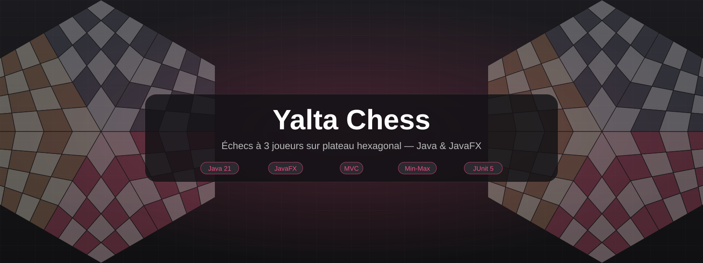
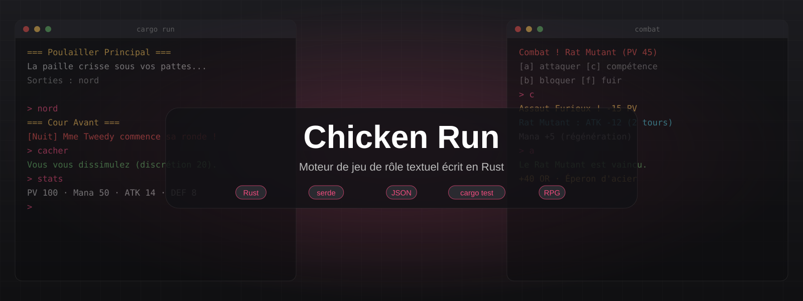
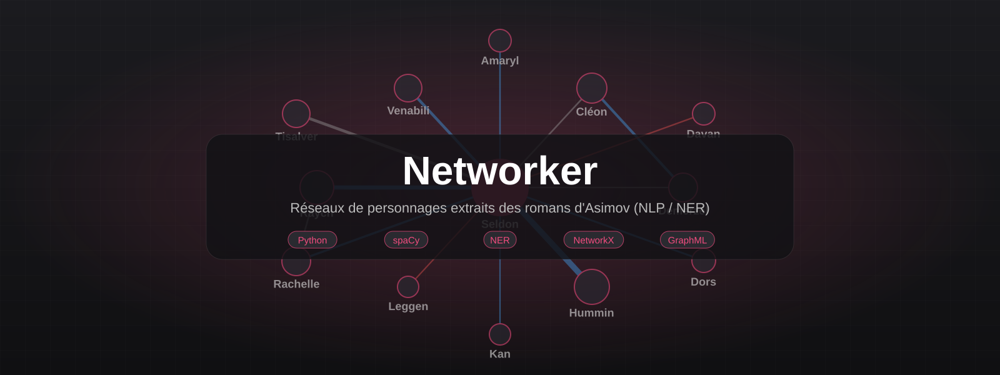
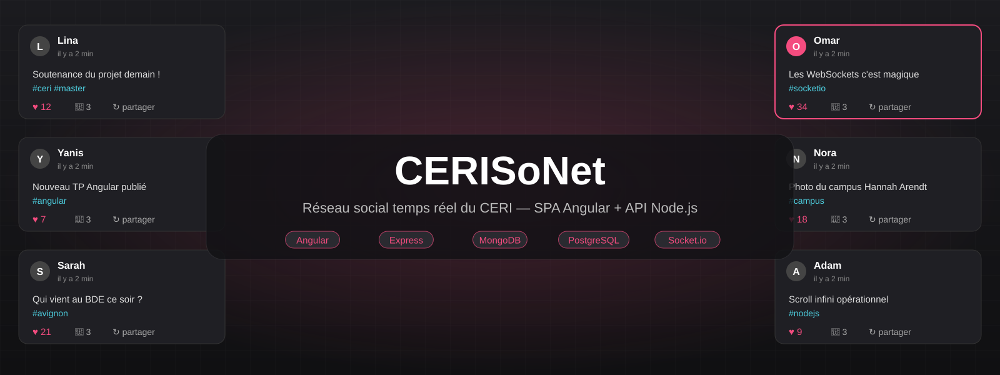
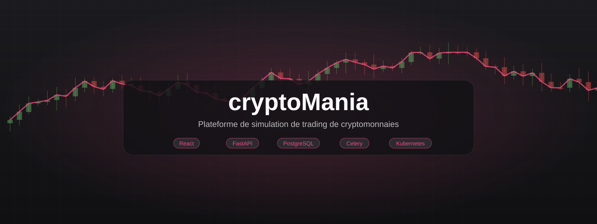
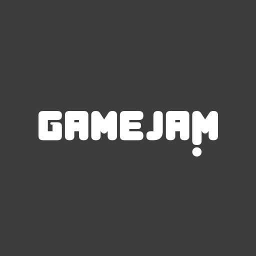
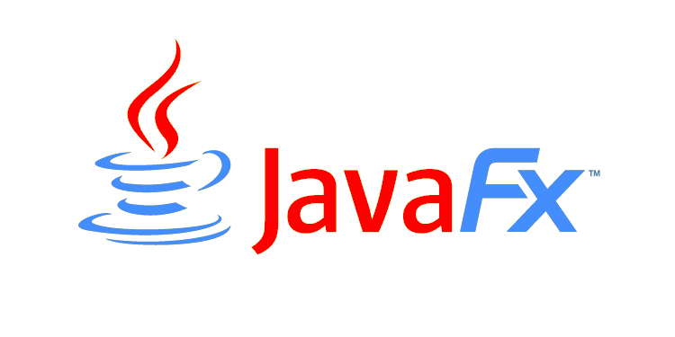
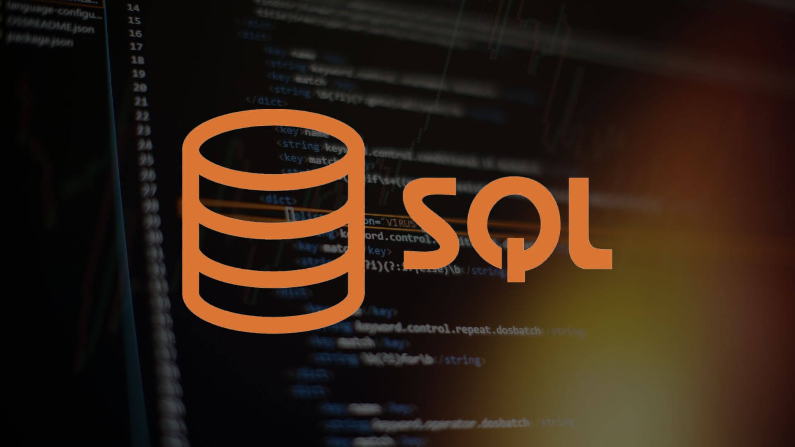
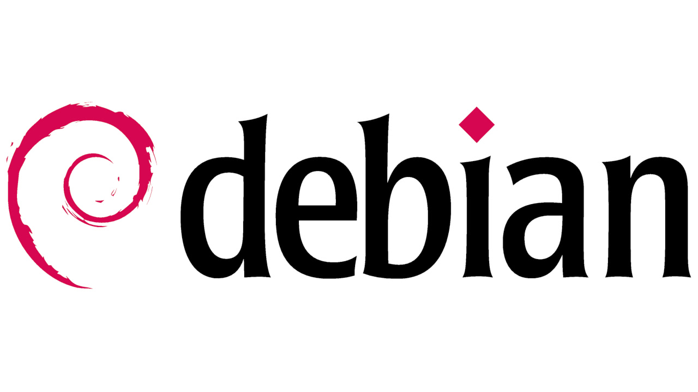
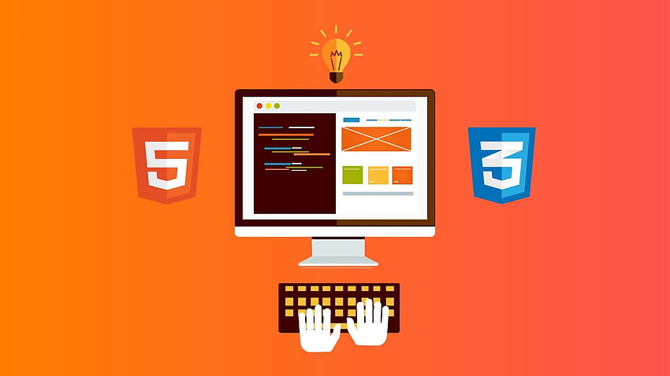

Mes projets
18 projets réalisés pendant mon Master, mes stages et mon BUT : développement web et API, DevOps, données, jeux et algorithmique.
Master ILSEN – Avignon UniversitéIngénierie Logicielle de la Société du Numérique · 2025 – 2027

Master ILSENYalta Chess
Implémentation complète du Yalta, variante des échecs à 3 joueurs sur plateau hexagonal de 96 cases, en Java 21 et JavaFX, avec une IA alpha-bêta multithreadée.
- Java 21
- JavaFX
- Maven
- JUnit 5

Master ILSENMoteur de jeu RPG en Rust
Moteur de jeu de rôle textuel écrit de zéro en Rust, piloté par des fichiers JSON, avec un jeu complet construit dessus : Chicken Run.
- Rust
- serde
- JSON
- cargo test

Master ILSENNetworker – NLP & NER Asimov
Pipeline Python de traitement automatique du langage qui extrait les personnages de romans d'Asimov, résout leurs alias et reconstruit le réseau de leurs relations sous forme de graphe.
- Python
- NLP
- NER
- spaCy

Master ILSENCERISoNet
Réseau social du CERI : SPA Angular connectée à une API Node.js/Express en HTTPS, double persistance PostgreSQL + MongoDB et interactions en temps réel via WebSocket.
- Angular
- TypeScript
- Node.js
- Express

Master ILSENcryptoMania
Plateforme de simulation de trading de cryptomonnaies : SPA React, API FastAPI, traitement asynchrone Celery/RabbitMQ, observabilité Prometheus/Grafana et déploiement Kubernetes.
- React
- Python
- FastAPI
- PostgreSQL
Expériences professionnellesStages en entreprise
 Stage
StageStage chez Rio Tinto
Mise en place d'un système de gouvernance des données pour l'industrie métallurgique chez Rio Tinto (LRF), incluant DataHub, PostgreSQL et Grafana Business Forms.
- Docker
- DataHub
- PostgreSQL
- Grafana
 Stage
StageStage chez POMA
Amélioration d’outils internes chez POMA : optimisation d’API, refonte d’interfaces et développement d’automatisations de processus métier.
- Python
- API
- Web
- JavaScript
BUT Informatique – IUT2 de GrenobleParcours Développement d'applications · 2022 – 2025
 BUT Informatique
BUT InformatiqueCareSenior
Développement d’une application de coordination pour le maintien à domicile des personnes âgées : multiacteurs, multi-plateformes, sécurisé et ergonomique.
- Angular
- TypeScript
- HTML/CSS
- Gestion de projet
 BUT Informatique
BUT InformatiqueCarnet de suivi de stage
Amélioration et optimisation d’une application de gestion de candidatures et de suivi de stages pour les étudiants.
- Web
- Mobile
- Optimisation
- UX/UI
 BUT Informatique
BUT InformatiqueLabScape
Escape Game éducatif 3D conçu avec Babylon.js, intégrant des mécaniques pédagogiques en physique et chimie.
- Babylon.js
- Serious Game
- 3D
- UML

BUT InformatiqueGameJam
Création d’un jeu éducatif basé sur la vie étudiante à l’IUT2 — programmation Python, interface graphique et modélisation UML.
- Python
- Jeu vidéo
- JavaFX
- UML

BUT InformatiqueLan Maker
Développement d’une application de gestion de tournois esports : modélisation, développement Java, interface JavaFX et gestion projet complet.
- Java
- JavaFX
- UML
- Gestion de projet

BUT InformatiqueExploitation d'une base de données
Analyse statistique des accidents de la route en France sur 15 ans à partir d’une base de données nationale.
- SQL
- Base de données
- Statistiques
- Analyse de données

BUT InformatiqueGuide d'installation serveur Debian 11
Installation et configuration d’un serveur Debian 11 complet avec Apache, PostgreSQL, PHP et documentation technique en anglais.
- Debian 11
- Apache
- PostgreSQL
- PHP

BUT InformatiqueRecueil de besoin
Conception d'un site web destiné aux élèves de troisième à la recherche de stage, via un recueil de besoin et création de wireframes.
- HTML
- CSS
- Wireframe
- Gestion de projet
 BUT Informatique
BUT InformatiqueCréation base de données Titanic
Conception et implémentation d'une base de données complète autour du naufrage du Titanic en SQL et modélisation SEA.
- SQL
- Base de données
- Modélisation
- Titanic
Implémentation besoin client
Développement d'un système de classification de textes en Java à partir d'un lexique construit et optimisé selon les besoins clients.
- Java
- Classification
- Optimisation
- Écoconception
Installation de Debian
Création d'une machine virtuelle et installation complète de Debian 11 avec configuration et déploiement d’applications.
- Virtualisation
- Debian 11
- Configuration
- Système
Aucun projet ne correspond à cette recherche.